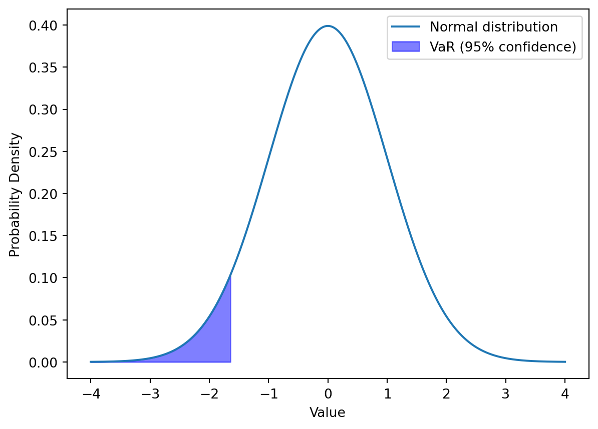

Hull, J. C. 2023. Risk Management and Financial Institutions. Wiley Finance.
Chapter 11 - Value at Risk and Expected Shortfall
Chapter 14 - Interest Rate Risk
Chapter 15 - Derivatives Risk
Chapter 16 - Scenario Analysis and Stress Testing
Pirie, W. L., and M. P. Kritzman. 2017. Derivatives. CFA Institute Investment Series.
Chapter 6 - Risk Management
Learning outcomes:
Explain the use of Value at Risk (VaR) in measuring portfolio risk.
Describe advantages and limitations of VaR.
Explain the use of Expected Shortfall (ES) in measuring portfolio risk.
Understand conditions for coherent risk measures and provide examples.
Define how to choose parameters for VaR and ES estimation.
6.1 Introduction
Market risk refers to the risk arising from changes in stock prices, interest rates, exchange rates, and commodity prices.
Risk management involves identifying and measuring risk and ensuring that it aligns with desired risk levels.
Effective risk management requires judgment, experience, and an understanding of model strengths and limitations.
Market risk is easier to analyze compared to other financial risks due to the availability of data and collective experience.
Estimating potential losses for market risk is challenging as they are unknown and based on historical data.
Risk management models blend historical data with forward-looking judgment to create a framework for testing and assessing risk.
Value at Risk (VaR) and Expected Shortfall (ES) are metrics that summarize total portfolio risk with a single number.
VaR was first introduced by JPMorgan and is now widely used by corporate treasurers, fund managers, and financial institutions.
Regulators have traditionally used VaR for capital requirement calculations, but have switched to ES for some market risk.
6.2 Understanding Value at Risk (VaR)
Definition of VaR
Value at risk is the minimum loss that would be expected a certain percentage of the time over a certain period of time given the assumed market conditions.
E.g.: The 5% VaR of a portfolio is $2.2 million over a one-day period.
Using the example given, it is correct to say any of the following:
$2.2 million is the minimum loss we would expect 5% of the time.
5% of the time, losses would be at least $2.2 million.
We would expect a loss of no more than $2.2 million 95% of the time.
Value at Risk (VaR) is an important risk measure in global financial markets.
VaR is defined as the minimum loss expected over a certain period of time with a specified level of confidence.
VaR can be expressed in currency units or as a percentage of portfolio value.
VaR is a minimum loss, not the total possible loss of the portfolio.
A VaR statement includes the frequency of losses and the time horizon over which they are expected to occur.
A 5% VaR implies a 95% level of confidence.
VaR statements can be rephrased to indicate the minimum loss expected or the maximum loss not expected to occur.
The concept of VaR is often illustrated using a probability distribution, such as the normal distribution, although other distributions may be more appropriate for financial market returns.
Code
import numpy as npimport matplotlib.pyplot as pltfrom scipy.stats import norm# Parametersmu =0sigma =1x = np.linspace(-4, 4, 1000)confidence_level =0.95# Calculate VaRVaR = norm.ppf(1- confidence_level, mu, sigma)# Plot the normal distributionplt.plot(x, norm.pdf(x, mu, sigma), label="Normal distribution")# Highlight the VaR areax_fill = np.linspace(-4, VaR, 1000)plt.fill_between( x_fill, norm.pdf(x_fill, mu, sigma), color="blue", alpha=0.5, label=f"VaR (95% confidence)",)# Add labels and legendplt.xlabel("Value")plt.ylabel("Probability Density")plt.legend()# Show the plotplt.show()

6.2.1 Simple VaR Calculations
Example 1 Suppose that the gain from a portfolio during six months is normally distributed with a mean of $2 million and a standard deviation of $10 million. How would you calculate the VaR for the portfolio with a time horizon of six months and confidence level of 99%, given the properties of the normal distribution?
Example 2 Suppose that for a one-year project all outcomes between a loss of $50 million and a gain of $50 million are considered equally likely, resulting in a uniform distribution extending from –$50 million to +$50 million. How would you determine the VaR with a one-year time horizon and a 99% confidence level for this project?
Example 3 A one-year project has a 98% chance of leading to a gain of $2 million, a 1.5% chance of leading to a loss of $4 million, and a 0.5% chance of leading to a loss of $10 million. How would you calculate the VaR with a confidence level of 99% and a one-year time horizon for this project, given the cumulative loss distribution?
6.3 Advantages and Limitations of VaR
6.3.1 Advantages of VaR
Simple concept: VaR is easy to understand, making it accessible to decision-makers without technical backgrounds by asking the question, “How bad can things get?”.
Easily communicated: VaR consolidates a large amount of information into a single, significant number.
Provides a basis for risk comparison: VaR allows for the comparison of risks across different asset classes, portfolios, and trading units.
Facilitates capital allocation decisions: VaR provides a benchmark for capital allocation decisions across different trading units or portfolio positions.
Can be used for performance evaluation: VaR can be used for risk-adjusted performance measurement, which provides a more comprehensive view of profitability.
Reliability can be verified: VaR can be backtested, making it easier to check its reliability.
Widely accepted by regulators: VaR is commonly used and encouraged by regulators like the SEC, making it a common sight in annual reports of financial firms.
6.3.2 Limitations of VaR
Subjectivity: The estimation of VaR involves a lot of subjective decisions, such as choosing the VaR cutoff, time horizon, and estimation method.
Underestimating the frequency of extreme events: VaR can underestimate the likelihood of extreme adverse events, often referred to as “left-tail events”.
Failure to take into account liquidity: VaR can be understated in the case of relatively illiquid assets, particularly during major market downturns.
Sensitivity to correlation risk: VaR does not fully account for the fact that correlations among assets can rise significantly during times of market stress.
Vulnerability to trending or volatility regimes: VaR can lead to an underestimation of losses during periods of low volatility and may not fully capture the risk in trending markets.
Misunderstanding the meaning of VaR: VaR is not a worst-case scenario measure, and losses can exceed the VaR.
Oversimplification: While VaR is easy to communicate, it can also oversimplify the risk picture.
Disregard of right-tail events: VaR focuses on the left tail (losses), often ignoring the right tail (potential gains).
VaR can be misleading when used to limit a trader’s risks. A trader can appear to meet a set VaR limit while taking on unacceptable risks.
For example, a trader can create a portfolio with a 99.1% chance of a daily loss under $10 million, but a 0.9% chance of a $500 million loss, meeting a bank’s one-day 99% VaR limit of $10 million.
Such skewed probability distributions, where large losses are more likely, are not uncommon. Trading strategies like writing out-of-the-money options often yield good returns but carry a small chance of huge losses.
Traders often seek high risks for high returns, and if they find ways to take high risks without violating risk limits, they will do so.
6.3.3 Extensions of VaR
No single risk model can answer all questions a risk manager may have, hence VaR has numerous variations, each providing additional information.
Conditional VaR (CVaR, Expected shortfall) estimates the average loss when VaR is exceeded.
Incremental VaR (IVaR) measures the change in portfolio VaR due to a change in position size.
Marginal VaR (MVaR) assesses the effect of a small change in position, useful for evaluating each asset’s contribution to total VaR in diversified portfolios.
IVaR and MVaR help evaluate a trade’s potential effect before execution.
Relative VaR, or ex ante tracking error, quantifies how much a portfolio’s performance might deviate from its benchmark.
6.4 Expected Shortfall
ES is also known as conditional value at risk, conditional tail expectation, or expected tail loss.
Expected Shortfall (ES) is an alternative risk measure to Value at Risk (VaR) that provides better incentives for traders.
It provides a more comprehensive view of risk than VaR by considering the magnitude of extreme losses.
ES is particularly useful for understanding the risk of rare but significant losses.
While VaR measures the maximum potential loss at a given confidence level, ES calculates the average loss beyond the VaR threshold.
To calculate ES, it is necessary to calculate VaR first. ES is the expected loss over time horizon T, given that the loss exceeds the VaR.
ES depends on two parameters: T (time horizon) and X (confidence level).
An example: If \(X\) = 99, \(T\) is 10 days, and the VaR is $64 million, then ES is the average loss over 10 days when the loss is greater than $64 million.
Setting ES limits for traders reduces risky position-taking.
ES has better properties than VaR as it always recognizes the benefits of diversification.
However, ES is not as straightforward as VaR and is harder to understand.
It is also more challenging to back-test a procedure for calculating ES compared to back-testing for VaR.
Other risk measures can be defined with different weightings, such as the exponential spectral risk measure (ES use equal-weights).
6.5 Coherent Risk Measures
Coherent risk measures provide a robust and consistent framework for assessing risk.
They take into account the benefits of diversification and ensure that increasing the scale of a portfolio increases the risk measure proportionally.
One example of a coherent risk measure is the Expected Shortfall (ES).
Value at Risk (VaR) is not coherent as it does not always satisfy the subadditivity property.
It is characterized by the following four axioms:
Monotonicity: If portfolio \(A\) always has returns greater than or equal to portfolio \(B\), the risk measure for \(A\) should be less than or equal to the risk measure for \(B\).
Subadditivity: The risk measure of the combined portfolio \(A\) and \(B\) should be less than or equal to the sum of the risk measures of \(A\) and \(B\) individually. This property ensures that diversification is rewarded.
Positive Homogeneity: If a portfolio’s holdings are scaled up by a positive factor \(\lambda\), the risk measure should also scale up by the same factor. Mathematically, if \(A\) is a portfolio and \(\lambda > 0\), then the risk measure of \(\lambda A\) should be \(\lambda\) times the risk measure of \(A\).
Translation Invariance: If a risk-free asset with return \(r\) is added to a portfolio, the risk measure should decrease by the amount \(r\). Mathematically, if \(A\) is a portfolio and \(r\) is a risk-free return, the risk measure of \(A + r\) should be the risk measure of \(A\) minus \(r\).
6.5.1 Subadditivity Example
Each of two independent projects has a 2% probability of a $10 million loss and a 98% probability of a $1 million loss in one year.
The one-year 97.5% VaR (Value at Risk) for each project is $1 million.
When combined into a portfolio, there is:
a 0.04% probability of a $20 million loss,
3.92% probability of an $11 million loss, and
96.04% probability of a $2 million loss.
The one-year 97.5% VaR for the portfolio is $11 million, which is greater than the sum of the individual project VaRs ($2 million) by $9 million, violating subadditivity.
The ES (Expected Shortfall) for a single project at 97.5% confidence level considers 2% at $10 million loss and 0.5% at $1 million loss. This results in an expected loss of $8.2 million.
When combined, the ES for the portfolio considers 0.04% at $20 million loss and 2.46% at $11 million loss, resulting in an expected loss of $11.144 million.
The sum of individual project ES ($16.4 million) is greater than the portfolio ES ($11.144 million), satisfying the subadditivity condition.
6.6 Choice of Parameters for VaR and ES
For both Value at Risk (VaR) and Expected Shortfall (ES), users must choose two parameters: the time horizon and the confidence level.
One assumption is that the change in the portfolio value at the time horizon is normally distributed, although this may not always be appropriate.
When the loss in the portfolio value has a mean of \(\mu\) and a standard deviation of \(\sigma\), VaR is given by:
\[
\text{VaR} = \mu + \sigma N^{-1}(X)
\]
where \(X\) is the confidence level, and \(N^{-1}(\cdot)\) is the inverse cumulative normal distribution.
For short time horizons, \(\mu\) is often assumed to be zero, making VaR for a particular confidence level proportional to \(\sigma\).
When the loss is assumed to be normally distributed with mean \(\mu\) and standard deviation \(\sigma\), ES with a confidence level of \(X\) is given by:
where \(Y\) is the \(X\)th percentile point of the standard normal distribution.
Example: The loss from a portfolio over a 10-day horizon is normally distributed with a mean of zero and a standard deviation of $20 million. The 10-day 99% VaR and ES are:
The choice depends on factors such as maintaining credit ratings.
A bank aiming for an AA rating might use a 99.98% confidence level for VaR to align with a 0.02% annual default chance.
It’s tough to estimate VaR directly with very high confidence levels.
Extreme value theory can help to solve this issue.
6.6.4 Back-Testing
Back-testing evaluates the performance of risk measure models, like VaR, using historical data.
It is relatively simple for VaR models.
The analysis focuses on “exceptions,” where actual losses exceed the VaR prediction.
A high or low percentage of exceptions may indicate model weaknesses.
Statistical tests can assess whether a VaR model should be rejected based on exceptions.
Regulators may increase market risk capital requirements if back-testing results over 250 days are unsatisfactory.
6.7 Additional Topics
6.7.1 Interest Rate Risk
Financial institutions have exposures to different yield curves, requiring calculation of VaR and ES.
Two approaches for this: considering each rate as a separate risk factor or using principal components analysis.
Bank’s net interest margin measures the excess of earned interest over paid interest; asset/liability management ensures constancy.
Duration is key in interest rate markets, measuring portfolio sensitivity to shifts in the zero-coupon yield curve.
Convexity of the portfolio adds precision for large parallel shifts, but not for nonparallel shifts.
Several duration or delta measures quantify different ways the yield curve can change.
Principal components analysis can be an alternative to multiple deltas, effectively hedging against standard shifts in yield curves.
6.7.2 Derivatives Risk
A trader monitors Greek letters (such as delta, gamma, vega) to keep them within specified limits.
Delta (\(\Delta\)) is the rate of change in portfolio value concerning the underlying asset’s price; delta hedging aims to create a delta-neutral position.
Hedging involves taking a position of \(-\Delta\) in the underlying asset, and complex portfolios require periodic rebalancing.
After achieving delta neutrality, traders often look at gamma (curvature of the relationship) and vega (rate of change with respect to volatility).
Gamma and vega can be altered by trading options on the asset.
Derivatives traders typically rebalance daily to maintain delta neutrality; maintaining gamma and vega neutrality regularly is usually infeasible.
Corrective action or trading curtailment may occur if gamma and vega measures get too large.
6.7.3 Scenario Analysis and Stress Testing
Stress testing is crucial in risk management, considering impacts of extreme scenarios usually ignored by VaR or ES analysis.
It allows understanding and mitigation of risks and can uncover potential systemic problems.
Scenarios generation methods include:
Examining extreme movements in one market variable.
Using historical market variables from extreme shock periods.
A committee of senior management and economists generating plausible extremes.
Reverse stress testing using algorithms to find large loss scenarios.
Scenarios should consider knock-on effects; market turmoil may lead to significant consequences like flight to quality or liquidity shortage.
Regulators in the US, EU, and UK develop stress scenarios for large financial institutions, possibly leading to capital raising requirements.
Integrating stress testing with VaR through subjective probabilities is an idea not widely adopted by financial institutions or regulators.
6.8 Practice Questions and Problems
What is the difference between expected shortfall and VaR? What is the theoretical advantage of expected shortfall over VaR?
A fund manager announces that the fund’s one-month 95% VaR is 6% of the size of the portfolio being managed. You have an investment of $100,000 in the fund. How do you interpret the portfolio manager’s announcement?
A fund manager announces that the fund’s one-month 95% expected shortfall is 6% of the size of the portfolio being managed. You have an investment of $100,000 in the fund. How do you interpret the portfolio manager’s announcement?
Suppose that each of two investments has a 0.9% chance of a loss of $10 million and a 99.1% chance of a loss of $1 million. The investments are independent of each other.
What is the VaR for one of the investments when the confidence level is 99%? [1 mil.]
What is the expected shortfall for one of the investments when the confidence level is 99%? [9.1 mil]
What is the VaR for a portfolio consisting of the two investments when the confidence level is 99%? [11 mil.]
What is the expected shortfall for a portfolio consisting of the two investments when the confidence level is 99%? [11.07 mil.]
Show that in this example VaR does not satisfy the subadditivity condition, whereas expected shortfall does. [18.2 > 11.07]
Suppose that the change in the value of a portfolio over a one-day time period is normal with a mean of zero and a standard deviation of $2 million; what is (a) the one-day 97.5% VaR, (b) the five-day 97.5% VaR, and (c) the five-day 99% VaR? [a) 3.92 mil., b) 8.77 mil., c) 10.4 mil.]
What difference does it make to your answer to Problem 5 if there is first-order daily autocorrelation with a correlation parameter equal to 0.16? [a) the same, b) 9.96 mil., c) 11.82 mil.]
The change in the value of a portfolio in one month is normally distributed with a mean of zero and a standard deviation of $2 million. Calculate the VaR and ES for a confidence level of 98% and a time horizon of three months. [VaR = 7.11 mil., ES = 8.39 mil.]
Suppose that each of two investments has a 4% chance of a loss of $10 million, a 2% chance of a loss of $1 million, and a 94% chance of a profit of $1 million. They are independent of each other.
What is the VaR for one of the investments when the confidence level is 95%? [-1 mil.]
What is the expected shortfall when the confidence level is 95%? [8.2 mil.]
What is the VaR for a portfolio consisting of the two investments when the confidence level is 95%? [-9 mil.]
What is the expected shortfall for a portfolio consisting of the two investments when the confidence level is 95%? [-9.96 mil.]
Show that, in this example, VaR does not satisfy the subadditivity condition, whereas expected shortfall does. [-9 mil. > -2 mil.]
Suppose the first-order autocorrelation for daily changes in the value of a portfolio is 0.12. The 10-day VaR, calculated by multiplying the one-day VaR by \(\sqrt{10}\), is $2 million. What is a better estimate of the VaR that takes account of autocorrelation?
The change in the value of a portfolio in three months is normally distributed with a mean of $500,000 and a standard deviation of $3 million. Calculate the VaR and ES for a confidence level of 99.5% and a time horizon of three months.